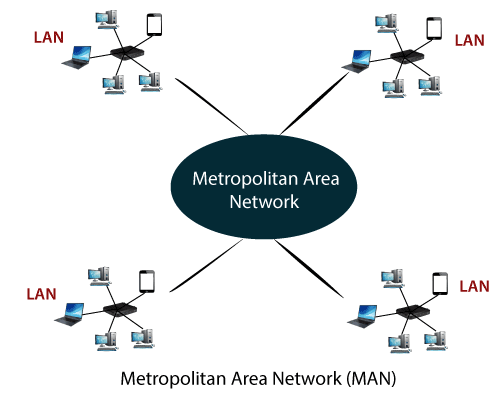

A LAN is usually privately owned and links the devices in a single office,building,or campus.
LAN size is limited to few kilometes nearly 5-10 KMS.
Local Area Network(LAN) has higher bandwidth rates with less cost.
In general, a given LAN will use only one type of transmission medium.
The most common LAN topologies are bus, ring, and star.
LANs have data rates in the 4 to 16 Mbps range.
Today, however speeds are increasing and can reach 100 Mbps with gigabit systems in development.
WAN - (WIDE AREA NETWORK) :-
A WAN provides long-distance transmission of data, voice, image, and video information over large geographical areas they may comprise a country, a continent, or even the whole world.
WANs may utilize public, leased, or private communication devices, usually a combination
Wide Area Networks (WAN) has lower bandwidth rates compared with Local Area Network (LAN) with high cost.
Current Wide Area Networks runs on bandwidths of 4 Mbps, 8 Mbps, 20 Mbps, 50 Mbps or 100 Mbps.
Wide Area Network (WAN) depends mainly on Internet Service Providers (ISPs) for connection solutions.
MAN - (METROPOLITAN AREA NETWORK) :-

A MAN is designed to extend over an entire city.
It may be single network such as a cable television network, or it may be a means of connecting a number of LANs into a single network.
MAN size is limited to 50-100 KMS.
MANs have data rates in the 100 MBPS to 1 GBPS range.
A MAN may be wholly owned and operated by a private company, or it may be a service provided by a public company, such as a local telephone company.
Most commonly used technologies to develop a MAN network are FDDI ( Fiber distributed Data interface) , ATM ( Asynchronous Transfer Mode).